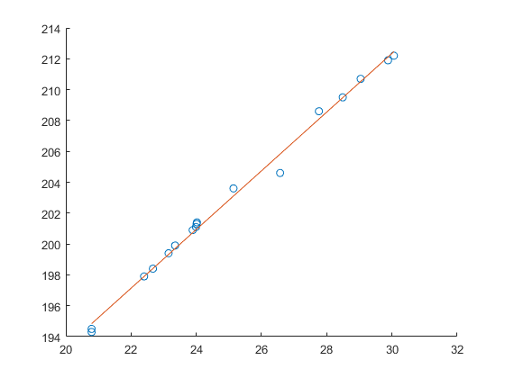

Contents
Small Samples
b1 = [12 20 7 18 9 3 22];
x = mean(b1);
s = std(b1);
n = length(b1);
dof = n-1;
t = tinv(0.95,dof);
mu = x - t*s/sqrt(n);
b2 = [b1 14 21 13 10 7 18 12];
x2 = mean(b2);
s2 = std(b2);
n2 = length(b2);
dof2 = n2-1;
t2 = tinv(0.95,dof2);
mu2 = x- t2*s2/sqrt(n2);
Hypothesis with small samples
n1 = 21;
n2 = 21;
x1 = 8;
x2 = 6.5;
s1 = sqrt(4.5);
s2 = sqrt(2);
dof = n1+n2-2;
t = tinv(0.95,dof);
sp = sqrt(((n1-1)*s1*s1+(n2-1)*s2*s2)/(dof));
difA = (x1-x2)- t*sp*sqrt(1/n1+1/n2);
difB = (x1-x2)- t*sqrt((s1^2)/n1+(s2^2)/n2);
Linear Regression
data = xlsread('linearregression.xlsx');
P = data(:,1);
T = data(:,2);
scatter(P,T)
B1 = sum((P-mean(P)).*(T-mean(T)))/sum((P-mean(P)).^2);
B0 = mean(T)-B1*mean(P);
y = B0+B1*P;
hold on
plot(P,y)
hold off
dof = length(T)-2;
var = sum((T-(B0+B1)*P).^2)/(dof);
x1 = 28;
ci1 = tinv(0.95,dof)*sqrt(1+1/(dof+2)+(x1-mean(P))^2/sum((P-mean(P)).^2));
x2 = 31;
ci2 = tinv(0.95,dof)*sqrt(1+1/(dof+2)+(x2-mean(P))^2/sum((P-mean(P)).^2));
